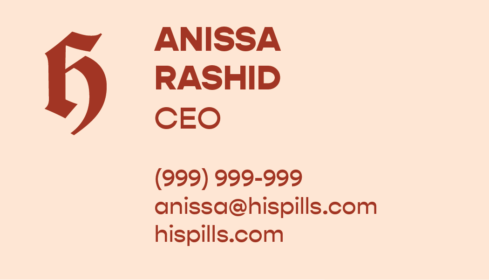
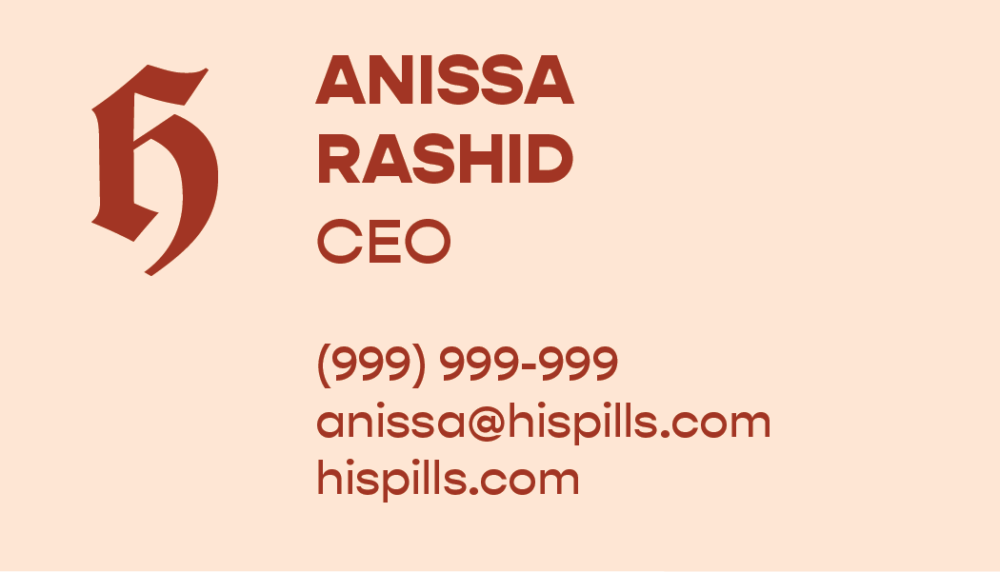

His Pills
Born out of the frustration that the majority of contraceptive methods are made for women rather than men, I created this brand to broaden our perspective towards birth control and to balance the responsibility equally. Female birth control can be a difficult for women to use, as it directly affects their hormones and can have extreme side effects. I wanted this brand to challenge the association with women and birth control responsibility by introducing what an alternative form for men could look like. His Pills is a birth control company that sells "the pill" to men or non-binary people.
*I use the term "male birth control," but this pill applies to anybody who wants a safe form of birth control that will prevent pregnancy for their partner.
Timeline: 4 months - Spring 2020
Design challenge: Build a brand idenity for your own company.
Sketching and Ideation


I wanted His Pills to have bold and playful branding, without presenting a hyper-masculine tone through the font or color palette. I explored multiple different color palettes and logo designs to sucessfully convey this brand as one that pushes healthcare boundaries and appeals to men without conforming to gender stereotypes.
Logo Design and Color Palette

I was torn between using a clean, bold, sans serif font, but I chose to use this script font, Cabazon, because it achieved the strength and playful tone that I envisioned for this brand. Just using a lower case "H" rather than "His" helped with readability and simplicity. I used a deep navy, red-orange, and a nude peach color palette because both the navy and red were bold colors that the nude helped to balance out. I also enjoyed how this palette was strong and saturated without being overtly masculine.
Packaging


Packaging for the pill boxes, each containing 32 tablets for the month.
Website
Wireframe for the company's website, includes information and help about the pill.
Official Branding Guidelines
Posters


I created posters to advertise the brand in public spaces. I used bold typography and suggestive imagery to draw attention towards the posters, and to highlight this brands mission of providing a safe and alternative method of birth control. His Pills was designed to not only reinforce that birth control is a shared responsibility, but to also normalize conversations around sex and sex education. I felt that using more suggestive imagery and color pallettes would be an effective way to raise these important conversations. I also am aware that a male birth control pill is designed for mainly heterosexual relationships as its purpose is to prevent pregnancy, and that condoms are still the most effective way to prevent against STI's, so I wanted to make this disclaimer on the posters.
Business Cards


 


I created three business cards that each used one color from the palette, and I paired the logo with Gopher. In order to maintain cohesion among the posters, I used the same line drawing and "wavy" type. These business cards are simple and cohesive with the other assets.
Products


Reflection
Overall, I’m happy with how this project turned out. I learned so many new skills and techniques with Illustrator throughout this process. If I had more time, I would create more supplementary assets, like an app mockup, to further establish this brand's purpose. I would also explore the art direction more, by leading my own photoshoots and creating more illustrations. I’m really glad I completed this project, and I hope to continue doing brand identity design.